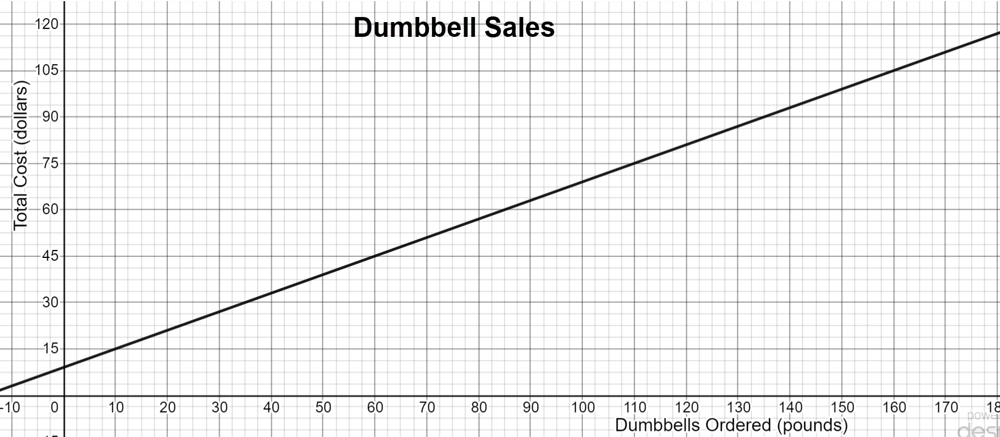
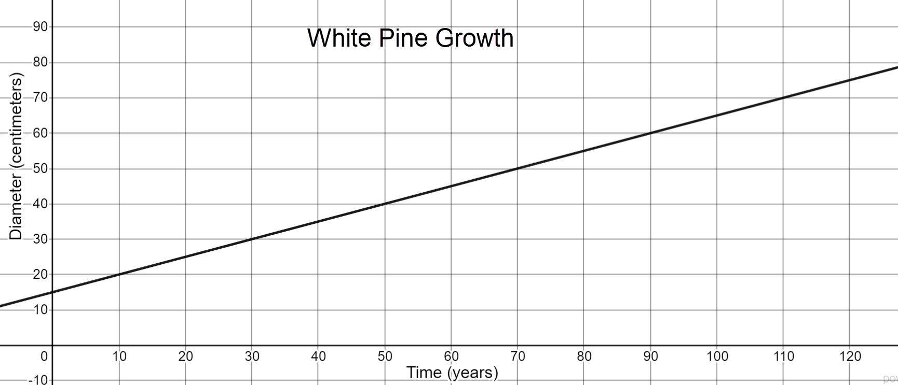
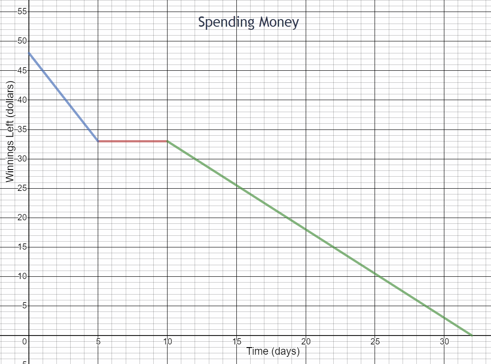
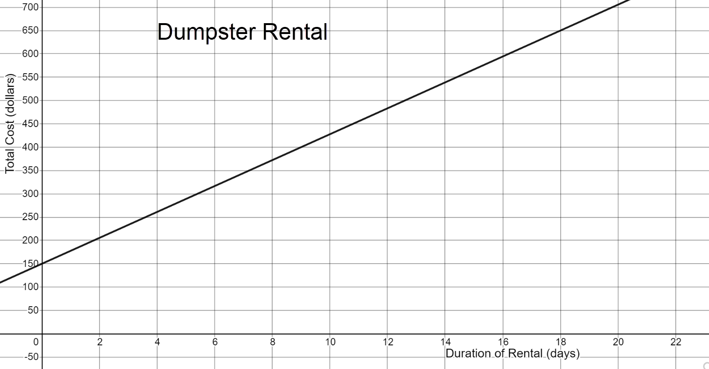
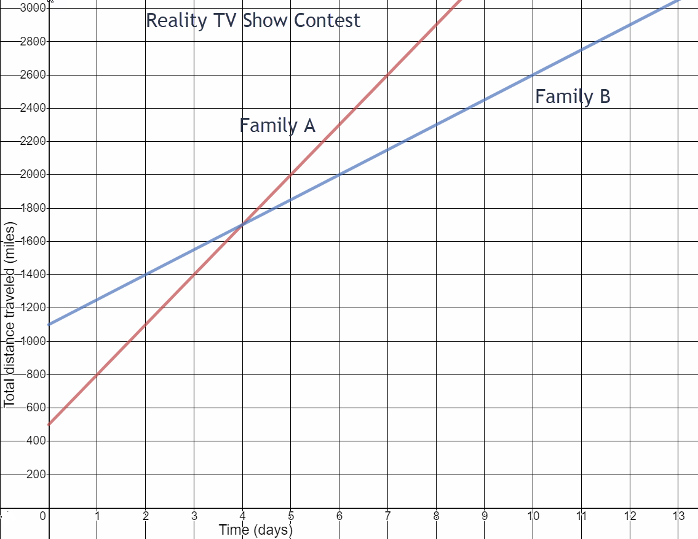

4.4 Rate of Change
-

- What is the total cost for 60 pounds of dumbbells ordered? Write this as an ordered pair.
- What is the total cost for 160 pounds of dumbbells ordered? Write this as an ordered pair.
- How much more does it cost for 160 pounds of dumbbells compared to 60 pounds? Write this rate of change in fraction form.
- How much more do you pay for each additional pound ordered?
- What is the initial cost of ordering dumbbells? (Look at the y-intercept where dumbbells ordered is 0 pounds.) What might this initial cost represent?
(60,45)
(160,105)
\(\begin{equation} \frac{105-45}{160-60}=\frac{\$60}{100 \text{ lbs}}=\frac{\$3}{5 \text{ lbs}} \end{equation}\)
$.60
$9 Could be the cost of shipping or processing fee or the cost of a weight bar.
- After working on a highway construction project for 100 days, the crew had completed 20 miles of road. What is the rate of construction?
\(\frac{20\text{ miles}}{100\text{ days}}=\frac15 \text { miles per day}\)
-

How fast is the tree growing?\(\frac{5}{10}\text{ cm per year}\frac{1}{2}\text{ cm per year}\)
- You won some money in a Ping Pong tournament.

- How much did you spend in the first five days after the tournament?
- How much did you spend per day in the first five days after the tournament?
- What does the segment between 5 and 10 days represent?
- How much did you spend between day 10 and day 32? What is the rate of change for this time period?
- When did you spend money at the fastest rate according to this graph?
\(\begin{equation}48-33=\$15\end{equation}\)
$3 per day
You did not spend any money.
\(\begin{equation}\frac{\$33}{22\text{ days}}=\$1.50\text{ per day}\end{equation}\)
Days 1 through 5
- Your friend also won some money in the Ping Pong tournament. Four days after the tournament your friend had $36 of winnings left. Eight days after the tournament, your friend had $21 of winnings left. What is your friend’s spending rate?
-

- What is the slope of this graph>
- Interpret this rate of change in context of the problem situation. Write a complete sentence.
\(\frac{500}{18}\approx 27.78\)
The cost of renting a dumpster is about $27.78 per day.
Two families are competing on a reality TV show. The goal of the show is to race from Los Angeles to New York. Each family is taking an indirect route and has different tasks to complete along the way. The family that completes the race in the least amount of time wins.

- What is Family A’s speed?
- What is Family B’s speed?
- Who appears to be winning the race?
\(\begin{equation}\text{ Family A: }\frac{2000-500}{5-0}=300\end{equation}\)
300 miles per day
\(\begin{equation}\text{ Family B: }\frac{2000-1100}{6-0}=150\end{equation}\)
150 miles per day
Family A
Slope:
\(m=\frac{21-36}{8-4}=\frac{-15}4=-3.75\)
Your friend is spending $3.75 per day.